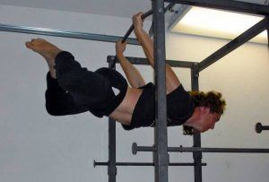
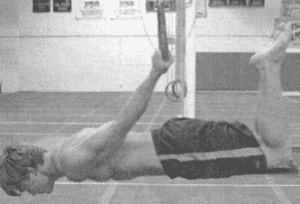
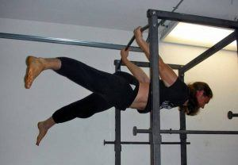
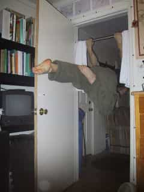
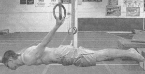

< < < Back
How To Complete The Back Lever – Return Of Kings
Rounding off my series of articles on the fundamental gymnastic static holds, this article will deal with the last few progressive steps of the back lever. Recall that several months ago I introduced you to this exercise, and last week I showed you the first few steps of the front lever progression. I fully intend for you to train in both of these exercises simultaneously, as strengthening one can only aid and assist the other (as I said in last week’s article, many muscle groups are utilized in these exercises, and thus it is an outstanding exercise for both gymnastics and strength training on the whole).
By this point, I will assume that you have mastered the back lever up until the inverted vertical hang. From here, you will, essentially, be rotating on your horizontal axis and opening up your hips and extending your legs out further and further in each progressive step, until your body is straight and horizontal. Having mastered the inverted vertical hang is essential here, as it is from this position that you will be lowering yourself into the horizontal progressions. If you cannot do the vertical hang, work on the exercises in the first article until you are capable of doing so.
And without further ado:
1. The straddle back lever
Assume the inverted straight hang position. While holding that position, begin bending at the knees, similar to how one would do the butterfly position. Your hips should be semi bent, and your knees fully bent—it also helps to put the bottoms of your feet together.
Then, slowly lower yourself into a horizontal hold where your stomach is parallel to the floor. You will find that this is much more difficult than any of the horizontal positions you have held before.
When you are capable of holding this position for 10 seconds, you are ready to move on.

2. The Half Back Lever
Once again, take the inverted straight hang position. Making sure to keep the hips locked in the vertical position, bend the knees. Your legs should form a right angle. I understand this might be somewhat confusing, so observe the picture for a visual aid that will explain the position you are supposed to take much better.

Once you have secured this position, lower yourself into a horizontal hold. You will immediately notice that this position is much more difficult to hold than even the straddle back lever—your abdominal muscles and lower back will have to be firing at all cylinders to do this position properly. Once again, when you are capable of holding this position for 10 seconds, you are ready to continue
3. Two Possible Progressions
The next step actually gives you an option, as there are two possible progressions you can use. Some gymnastic coaches will advocate one or the other, and I figure that certain people (or certain body types) will respond better to one or the other, so I’d just detail both of them.
The first is the split leg back lever, which begins with the inverted straight hang as usual. Then, keeping the hips vertical, you split the legs as wide as possible. Then lower into the horizontal hang—it is said that the wider you split your legs apart, the easier it is to go horizontal.

However, the circumstances of my surroundings (namely, where my pull-up bar is located) means that it’s not really possible for me to spread my legs wide. And, as luck would have it, another gymnastics text I looked into suggested another progression for the front lever: the one-leg back lever!
The basic premise is similar to the one-leg front lever, but the way you get into this position is different. As you might expect, the one legged back lever starts in the inverted straight hang, and then has one leg bend as much as possible while the other is straight. Then lower into a horizontal hang. Be sure to switch legs for each “repetition”.

4. The back lever
And finally, the back lever: Hit the inverted straight hang, tense all the muscles, and lower yourself down. Much easier said than done, of course!

Conclusion
Bear in mind that I myself cannot yet do the back lever, I am on the one leg front lever, the step just before the back lever. My research tells me there are no steps between the one-leg back lever and the true back lever, and also that it can take many months, if not a year or more, to master this gymnastic position.
As I have recently begun to go back to the gym after a year of recuperating from my car accident, I have already noticed an increase in strength (or rather, less atrophy than would be typical of injury rehabilitation) thanks to these gymnastic positions. Thus, I expect to achieve the true back lever within the next couple of months.
Read More: How To Learn the Back Lever